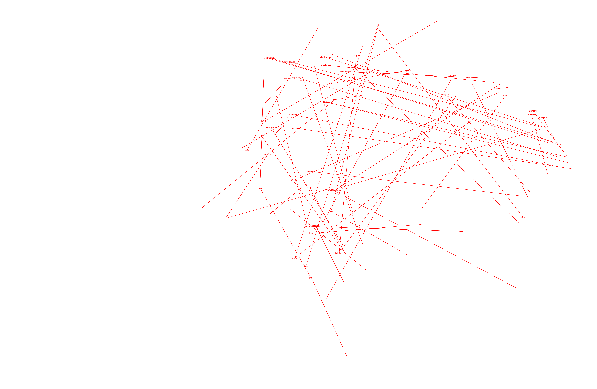

"A picture held us captive. And we could not get outside it, for it lay in our language and language seemed to repeat it to us inexorably.”
― Ludwig Wittgenstein, Philosophical Investigations
This post is about my junior spring independent study.
It began with the idea that there were two ways we saw relationships between words.
The first was internal. We look at a word, and derive relationships from its literal structure: the length of the words, the roots and modifiers within it that we recognized. Runner has something to do with Run (and whatever er should mean). Optogenetics has something to do with optics and genetics. Nonfiction has something to do with fiction.
The second was external. We look at a word, and derive relationships from the words around it. Subject object verb. The cat is eating fish. The cat can eat things. The fish can be eaten. We learn that cats and fish have some kind of relationship by their context.
Going a little deeper: even if we were making two separate interpretations while we read, there should only exist a single true interpretation of concepts within a language, right? After all, the purpose of language was to convey ideas, and you could hardly do that if people had different images for different words.
Linguistic relativism might occur in a few places, but for the most part, language usually serves its purpose: communicating common concepts. Some Platonic ontology existed, a set of relationships which internal and external interpretations were only reflections.
In that case, the two ways we made relationships between words, internal and external, should lead to the same results. Working to show this, with satisfying visual and visceral scale, was my goal with this independent study.
I had ideas on how to visualize the two ways.
One way to explore the internal representation could be found in Esperanto, an artificial language built out of a regular system of modifiers. I’ve been learning Esperanto on the side for a couple of years now, and I’ve always found the structures between its words fascinating.
The best way to visualize external representations would have been a human brain, but as that was not an option, I went with Word2Vec, a neural network which could capture contextual information in the form of word embeddings.
The roadmap for the rest of the independent study fell into place after I had determined these angles of attack. I would first create Word2Vec word embeddings for an Esperanto dataset, mapping the similarity of different Esperanto words in multi-dimensional space. Word2Vec derived meaning from the context of words alone, their position relative to others -- which was just what we wanted.
Then, taking advantage of Esperanto’s regular morpheme system, I could annotate those word embeddings with their morpheme associated meanings, and look for connections between positions -- the context derived, external meaning of words -- and morphemes -- the semantic, internal meaning of words.
The results of this independent study were very cool. I think I succeeded in showing the connections between the two interpretations, and for pretty diverse subjects as well.
In Esperanto, very simple nouns can be created from roots by adding an -o ending. We can, however, modify these nouns with different suffixes that denote a different form of the original noun.
For example:
The suffix -ulo corresponds to the -person form (e.g. sales person).
The suffix -ero corresponds to the piece or fragment form (e.g. breadcrumb).
The suffix -ino corresponds to the female counterpart (e.g. super woman).
Through Word2Vec embeddings of Esperanto, I was able to show that transformations from the Esperanto root word to its suffixed version were consistent across many different roots, for specific suffixes. These transformations, known as morphological derivatives, could be identified as vectors.
In this way, I was able to quantify relationships between the words as vectors in ℝ2, or changes in 2D space.
And there, we saw internal jumps--from a word to its suffixed counterpart-- mirrored again and again by external jumps, from one position in the context embedding to another.
Click here to jump to the results!
My exploration started with familiarizing myself with the Word2Vec neural network, which represents the meaning of words in a vector format. I used gensim's Word2Vec to streamline the process as much as possible. Gensim is a Python library that makes topic modeling, or the process of clustering similar word groups and expressions, extremely easy. All I had to do was import the Word2Vec model from gensim and read the documentation.
Although Word2Vec was not the focus of my study, I will try to give a brief description of what Word2Vec does. By scanning through training text, Word2Vec is a way of creating a set of word embeddings. These word embeddings are positions in space, usually multi-dimensional, and they convey semantic meaning: close words are more similar in meaning than distant words.
To create these word embeddings, Word2Vec first initialises every word it sees into a random position (technically, these positions are the hidden layer of the network). It then processes the text word by word, calibrating the positions of words accordingly based on their context.
I used the Skipgram Word2Vec model, the standard way to build word embeddings. The main way that it does so is by increasing the associations between word pairs seen in the same context (these pairs of words are more likely to be related). This is equivalent to moving the second vector, corresponding to a neighboring word, towards the first word vector, which corresponds to the focus word.
It also employs a few other methods to train effectively. One is an approach called subsampling, where very frequent words are sometimes dropped from the training process. Another is negative sampling, where a small random sampling of vectors is moved away from each focus word. These push and pull actions result in a loosely clustered cloud of word embeddings, which looks something like this after dimensional reduction.
Word2Vec got a lot of publicity due to a unique attribute of its vector representations: they seemed to be able to represent different analogies between words.
With the word vectors generated by the model, you could perform a sort of arithmetic with the vectors, capturing the relationships between the words. If "word" denotes the Word2Vec vector representation of a word, then “king” - “man” + “woman” is closest to "queen" in position. In this way, the vector operation itself captured some quality about the relationship between two words: in this case, gender.
 The classic Word2Vec diagram demonstrating how word vectors can encapsulate semantic meaning.
The classic Word2Vec diagram demonstrating how word vectors can encapsulate semantic meaning.
The artificial and regular language, Esperanto.
Esperanto also has fairly quantifiable relationships between words, due to the way that the language was based on a system of roots and modifiers.
Esperanto is an artificial language invented by a Polish ophthalmologist, L.L. Zamenhof. He invented Esperanto with the goal of promoting international communication without resorting to the use of one language to bridge cultures. Consequently, it is made to be as easy as possible to learn. This focus on transparency and universality means that Esperanto relies on a highly constant and predictable derivational morphology.
There are systems of modifiers that apply to almost all roots:

This makes the language predictable, and more rooted in literal alphabetical characters than English. Esperantists are often able to make up new words, substituting them in regular conversation because of the regular and constant nature of wordbuilding in the language. Almost all Esperanto words fall into a word family sharing a root word, and modifiers often (but not always) denote a similar semantic modification.
The way that Esperanto wordbuilding doesn't modify its constituent morphemes makes it an aggluginative language. This makes searching for morphemes, as substrings of words, extremely easy. A morpheme on its own, like "ek", is going to modify another word in the same way.
This meant that annotation of the texts would be very straightforward, code-wise: identify important substrings within the word embeddings and highlight them.
I found a training corpus in the Tekstaro, a collection of free texts collected for language analysis purposes. It consisted of a lot of biographies, writings by Zamenhof and his fellow proponents and a few classics like Alice in Wonderland as well. It was pretty fascinating, and I tried to make the most of my limited Esperanto abilities:
Homaranismo, a 1906 exposition on the philosophical underpinnings of EsperantoLa homaranismo estas instruo, kiu, ne deŝirante la homon de lia natura patrujo, nek de lia lingvo, nek de lia religianaro, donas al li la eblon eviti ĉian malverecon kaj kontraŭparolojn en siaj nacia-religiaj principoj kaj komunikiĝadi kun homoj de ĉiuj lingvoj kaj religioj sur fundamento neŭtrale-homa, sur principoj de reciproka frateco, egaleco kaj justeco.
Altogether, it was 105 texts of varying lengths. When converted into txt files and compressed into a .zip, it was about 25 MB. This was a little low for Word2Vec purposes, but it turned out to be just about good enough. I was also initially a bit worried that the subject matter of the Tekstaro would impact the vocabulary and word embeddings too much, but based on my understanding of the language, the vocabulary was more or less typical of an Esperanto text. There were quite a few Anglicisms in the text, but that would have been a problem with a lot of other languages, and didn't really affect the end result too much.
With the help of an excellent tutorial from Kavita Ganesan, I was able to get off the ground quickly and produce several visualizations very quickly. I then used sklearn's TSNE to reduce the dimensions of the word embeddings, from 150 to 2, and matplotlib to visualize the resulting word positions.
The resulting images provide what can be seen as a cross-section of the Esperanto language, revealing its inner structure. It clearly demonstrates the connections between parts of speech as labeled by Esperanto, or the highlighting, and the Word2Vec context-derived meaning, or the position:
#noun ("o" ending) firebrick red
#adjective ("a") orange
#adverb ("e") wheat
#infinitive ("i")yellowgreen
#imperative (u) hotpink
#blues are verbs
#darkturquoise (as) is present tense
#royalblue (is) is past tense
#darkorchid (os) is future
#imperative verb (us) navy
#other is black (numbers, anglicisms, etc.)

(Each of these super high resolution images can be clicked to open a zoomable version)
The code, and an explanation of the steps I took are in a Google Colab notebook:
This would form my basic model generation file that I would rely on later.
Key technical pointers:
Every visualization requires two files.
After initial model generation, I quickly realized that I could iterate much faster with a separate notebook for visualization, that worked purely off of the above two.
Through various modifications to the visualization methods, I produced a set of visualization utilities that I will quickly explain and give a brief demo. This also demonstrates the evolution of my thinking over time. The most interesting visualization is at the end if you want to skip there.
This notebook produces the the same visualization as earlier, but is completely separate from the original EOWord2Vec.py, (used for model generation purposes only at this point)., generating completely off of the given files. It’s also nicely broken up into imports, annotations, and plot generation. Above, I've generated a visualization color coded for parts of speech, much as I had done before. However, this one uses a new set of word embeddings, for a 200 occurrence minimum, greatly reducing the amount of vocabulary and improving the distinctions between groups.
I also implemented an automatic coloring system with Matplotlib’s colorarray(which simply found colors that were as far apart from one another as possible, given the number of morphemes).
This notebook just searches for and highlights all words containing a single morpheme, e.g. “parol” (to talk). This was pretty helpful early on so I could look at single families. The example above contains all vocabulary with the morpheme “ek” (which denotes outside or external).

The first iteration where I used the full list of morphemes:
['bo'],['dis'],['ek'],['eks'],['fi'],['ge'],['mal'],['mis'],['pra'],['re'],['adiado'],['ao'],['ano'],['aro'],['jo'],['ebl'],['ec'],['eg'],['ejo'],['ema'],['enda'],['ero'],['estro'],['et'],['io'],['ido'],['igi'],['ii'],['ilo'],['ino'],['inda'],['ingo'],['ismo'],['isto'],['njo'],['obl'],['on'],['op'],['ujo'],['ulo'],['um'],['ant'],['ad'],['adi'],['ado'],['ajho'],['ajxo'],['ao'],['al'],['am'],['an'],['ano'],['anta'],['ante'],['anto'],['ar'],['aro'],['as'],['at'],['ata'],['ato']
I ended up only searching for morphemes with 3 or more letters because two letter morphemes (like “as” or “io”) had too many false matches. It’s also ordered by length because we want to find rare morphemes to highlight first before less rare ones (and in some cases, morphemes like “ado” would completely dominate over “adiado”).
I trained Word2Vec on the 20 occurrence minimum setting this time, producing a word embedding in between other two vocab sizes.
The visualization produced (above) is interesting, but a little overcluttered.
I annotated this visualization by hand because I thought I saw some cool patterns. I first noticed that the infinitive to speak, paroli, was in the middle of the infinitive cloud (on the bottom left), and that there were many variants of the original nearby. I sketched a little connector graph.
The first is for the locations on the graph of a group of infinitives (-i ending): alparoli, paroligi, priparoli, elparoli, ekparoli, interparoli -- all represented by their morphemes, plotted as in the visualization, and connected to the root word paroli denoted by the asterisk (*).
The second is for the same type of connector graph for the cloud of past tense verbs: alparolis, priparolis, elparolis, reparolis, interparolis, and ekparolis, all represented by their morphemes, also plotted spatially as they appeared in the visualization, and connected to the root word parolis denoted by the asterisk (*).
You’ll notice that I listed the above in a clockwise fashion as they appeared on the word embedding graph. Why? The definitions of the words is as follows:
<most formal>
Alparoli: to address
Paroligi: to make somebody talk
Priparoli: to discuss
Elparoli: to enunciate
Ekparoli: to begin talking
Interparoli: to converse
<least formal>
The clockwise order of the words seemed to correlate to a certain formal/informalness scale, and both the infinitive and the past tense groups seemed to display this! I thought this was pretty interesting, but obviously it was just one example. It became clear that we couldn’t really digest the information at this scale, so I decided to move on in the end.
The idea of these little radial connector graphs stuck with me though, and so what I did next was generate one for every possible root word, with each arrow pointing to a variation (root+morpheme). Then I could make the same attributions among many different morphemes! I did this with the help of a dictionary with each possible base entry as a key etc. etc. I believe this ran in something like O(n^3) time but honestly, who cares at this point.
Here’s a word family for “ali”, which is supposed to represent correlatives, but I think there were a lot of false matches. Arrows go from ali pointing to each variation.
['ali', 'alia', 'aliaj', 'realigi', 'faligis', 'aliuloj', 'alie', 'falis', 'alian', 'italion', 'italio', 'aliajn', 'analizo', 'aŭstralio', 'normaligi', 'batali', 'analizoj', 'aŭstraliaj', 'aŭstralia', 'analizojn', 'aliĝi', 'kapitalismo', 'novliberalismo', 'kapitalistoj', 'socialismo', 'ĵurnalisto', 'socialisma', 'alimaniere', 'aliflanke', 'anglalingva', 'aliloke', 'malicaj', 'totalisma', 'anglalingvanoj', 'koalicio'....]
This visualization technique was cool! The arrows looked very minimalistic and there were some underlying structures that seemed to be emerging. I still couldn’t make much use out of it though, especially considering that some word groups had more than 200 different arrows. I never annotated these graphs.
Here is every word family with more than 30 arrows:

Still think it looks sick though.
Here I started to get the right idea.
I took the radial connector graph concept and applied it to two specific word families from above, eliminating all the other nonsense. These were the well defined and classic stems parola, to speak, and labora, to work. I was looking for a clockwise or counterclockwise trend as I had seen before. Unfortunately, there was no correlation observed among individual word groups as I had done with paroli and parolis.
I don’t have a saved version of the Parola/Labora radial comparisons, but I do have one for Bona/Mala (good/bad-- of all things, you’d expect a correlation here, but nothing obvious appeared to me. Maybe you can find something).
Instead of comparing the arrows across word groups, why didn’t we just compare the changes caused by morphemes across words by representing them as arrows?
We didn’t want to know if “laboro” had all of these different permutations “laborino eklaboro laborujo”-- we wanted to see if specific morphemes like “aro”, denoting some internal meaning, created an analogous change in external position.
If going from tree to forest as “arbo” to “arbaro” could be quantified as (+2, -7) on word embeddings, and if going from person to crowd as “homo” to “homaro” was also somehow (+2, -7), then we could prove Word2Vec’s capacity for analogous arithmetic-- by showing that to go from “one to many” in semantic meaning, as “aro” implies, was a single shared vector operation across different Word2Vec word pairs.
I think I’ve succeeded in showing this.
Appropriately named Directional, this program starts simple. No assembling complicated roots and tacking on morphemes. It focused exclusively on nouns (-o endings), and on a single suffix.
Pseudocode is as follows:
Suffix = “aro”
For word in vocabulary:
If word ends with “o”:
save its coords to dictionary as {word: (x,y)}
For word in dictionary:
For possible_word in vocabulary:
if word with "o" replaced with suffix matches possible_word:
save possible_word coords to dictionary under word
For word in dictionary:
Remove words that didn’t get matched
Draw an arrow from word to its suffix counterpart found above.
And we see really nice correlations immediately:
The following all show a majority conforming to 1 to 2 major vector patterns:
-ujo (denotes box or container):
-ino (denotes female equivalent):

-aro (denotes group):
-ano (denotes member, supporter):
The following show weak correlations but are smaller, with more possibilities for semantic variability among use cases:
-ego (denotes largeness, excess)
-ido (denotes offspring)
And the following have complex and varied vector groups but still in strong patterns. Neither are restricted to nouns so results also vary more because of that.
-ek (denotes abrupt, quick)
-mal (denotes bad, negative)
As you can see, more than singular vectors for every morpheme, there are several different reoccuring vector operations for each morpheme-- these vectors denote the variety of different analogies actually encapsulated by a certain morpheme.
For example, ek might denote abrupt in many different ways-- one of these might be "quick", which has different connotations than abrupt. In general, for verbs there is a stronger equivalency in terms of semantic change (running is to sprinting as jumping is to leaping) but for other categories not so much.
When the analogous case is less flexible, as in ujo in particular, we see one really strong adherence to a single vector that goes at an acute angle downwards. Going from a thing to a container of the thing is much less interpretable (one dominating use case is nationality: (Hispano >> Hispanujo)) and as a result it has really strong correlations.
{kind=link}